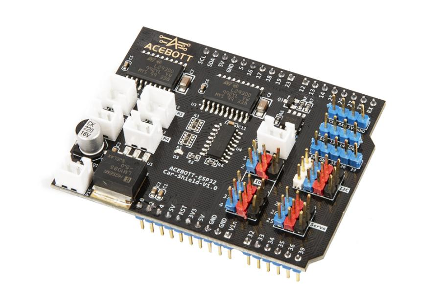
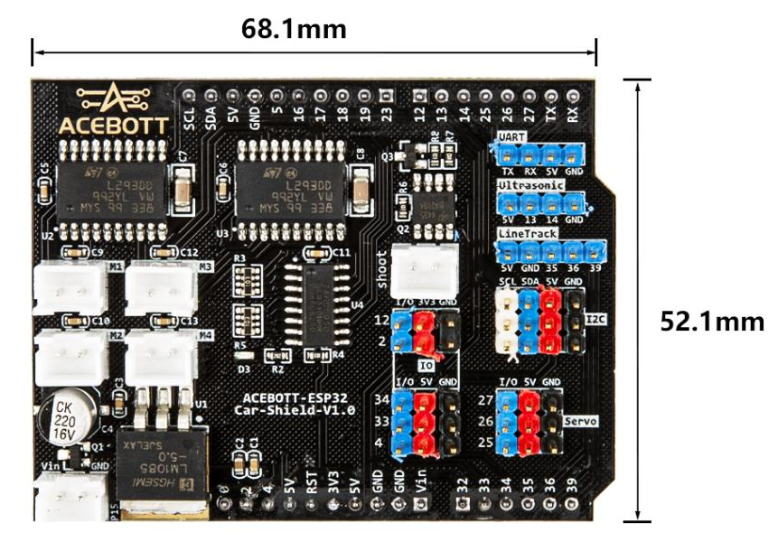
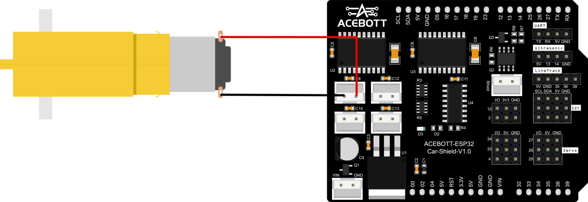

QA052 ESP32 Car Shield V1.0
1.Introduction
ACEBOTT-ESP32-Car-Shield-V1.0 is an expansion board for the ESP32-Max-V3.0 controller board, which is mainly used for the construction of smart cars. The expansion board adopts a standardized connection method, simplifies the hardware connection process, and the most important thing is to increase the function of motor drive, which improves the development efficiency and flexibility of the project, so that developers can focus more on the core functions and innovation of the project.
For more information about the ESP32 controller board, please click the following link: https://acebottteam.github.io/acebott-docs-master/board/ESP32/QA007%20ESP32%20Max%20V1.0%20Controller%20Board.html
2.Features
Three 3-pin digital pins
Two 3-pin analog pins
Two rows of pin interfaces for ESP32-Max-V3.0
Five DC motor interfaces
Three I2C pins
Three servo interfaces
One serial port
One ultrasonic interface
One three-way Trace sensor interface
One power interface (Max input voltage 15V Max output current 3A)
Operating temperature 0~70℃
3.Specifications
Size：68.1mm*52.1mm
Weight：22g
4.Sample Code
Connect the expansion board to the esp32 controller board, connect a TT motor in the M1 interface of the expansion board, upload the program, and control the forward and reverse rotation of the motor.
（1）Wiring Diagram
（2）Sample Code
1#include"Arduino.h"
2
3int M1_Forward = 128;//Corresponding to 10000000 in binary, M1 is moving forward
4int M1_Backward = 64;//Corresponding to the binary 01000000, M1 moves backwards
5
6void setup() {
7 pinMode(18, OUTPUT); // SHCP_PIN
8 pinMode(16, OUTPUT); // EN_PIN
9 pinMode(5, OUTPUT); // DATA_PIN
10 pinMode(17, OUTPUT); // STCP_PIN
11 pinMode(19, OUTPUT); // PWM1_PIN
12}
13
14//Define the motor pins and speed of the expansion board
15void Move(int Dir, int Speed)
16{
17 digitalWrite(16, LOW); // EN_PIN
18 analogWrite(19, Speed); // PWM1_PIN
19
20 digitalWrite(17, LOW); // STCP_PIN
21 shiftOut(5, 18, MSBFIRST, Dir); // DATA_PIN, SHCP_PIN, MSBFIRST, Dir
22 digitalWrite(17, HIGH); // STCP_PIN
23}
24
25void loop() {
26 Move(M1_Forward,255); //Motor forward rotation
27 delay(3000);
28 Move(M1_Backward,-255); //Motor reverse rotation
29 delay(3000);
30}
5.Test Result
After the program is uploaded, the TT motor cycles to achieve the effect of forward rotation for 3 seconds and then reverse rotation for 3 seconds.

6.Related Resources